Introduction
The app is connected with Woocommerce (WordPress) using REST APIs, the following documentation will guide you through the process to connect the app with your Woocommerce Store.
Content
-
Install Wordpress
Follow this link to get help in installing Wordpress:
https://codex.wordpress.org/Installing_WordPress -
Install and setup Woocommerce
Follow this link to get help in installing and setup Woocommerce:
https://docs.woocommerce.com/document/installation-2/ -
REST APIs for Woocommerce
To use the latest version of the REST API you must be using:
- WooCommerce 2.6+.
- WordPress 4.4+.
- You may access the API over either HTTP or HTTPS, but HTTPS is recommended where possible.
- Pretty permalinks in Settings > Permalinks so that the custom endpoints are supported. Default permalinks will not work. 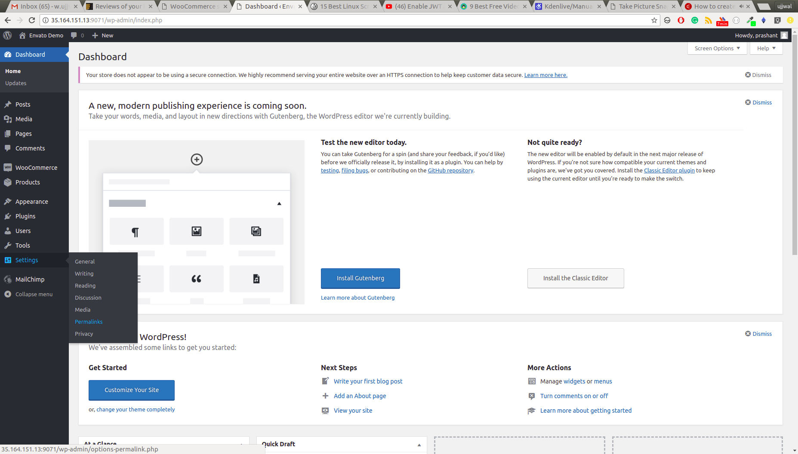 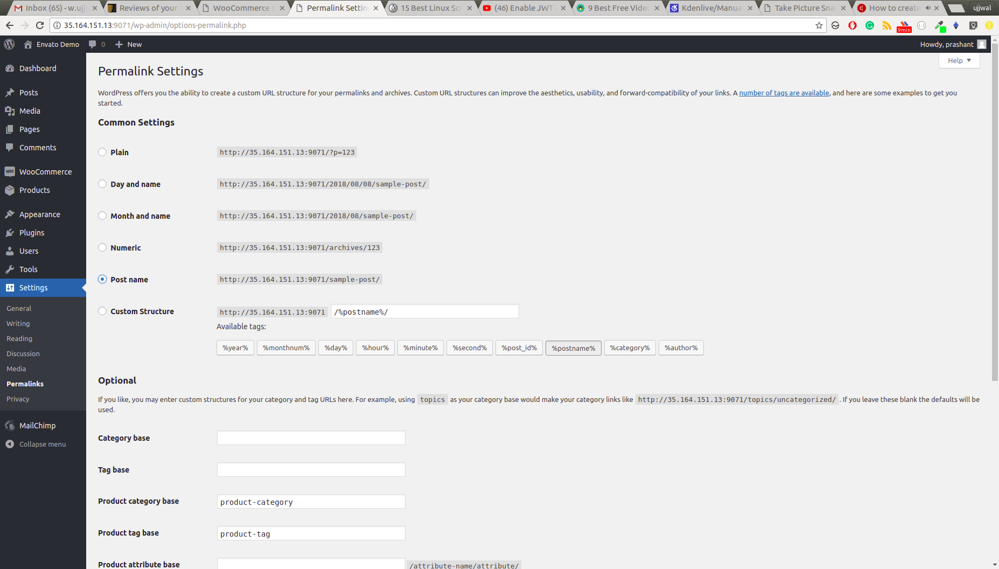
-
Plugins
-
jwt-authentication-for-wp-rest-api
You will find the file named
jwt-authentication-for-wp-rest-api.zipin the package you downloaded from envato. It’s a plugin that enablesAuthorization Headerbased authentication for Woocommerce Rest APIs that we use in our app. You need to install this plugin on your wordpress. If you are not aware of how to install the wordpress plugin, follow the following steps:- In your wordpress admin, go to Admin Menu > Plugins > Add New > Upload Plugin
- Choose the file
jwt-authentication-for-wp-rest-api.zip - Click on Install Now
- Click on Activate Plugin 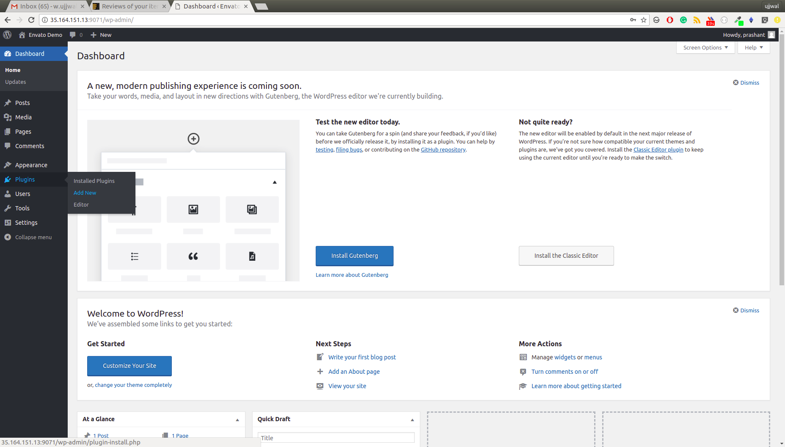 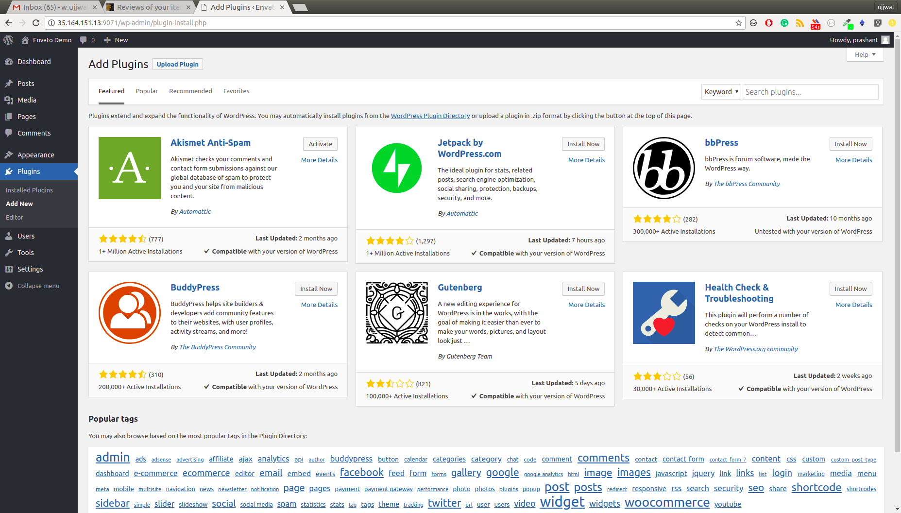 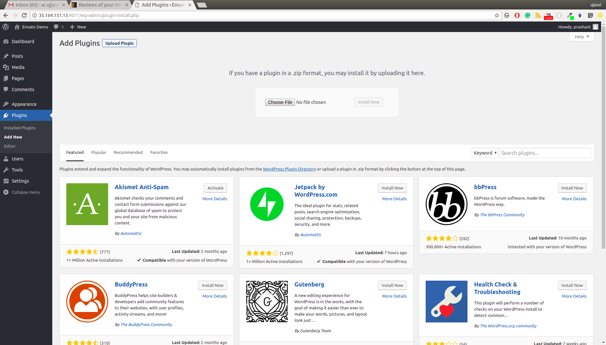 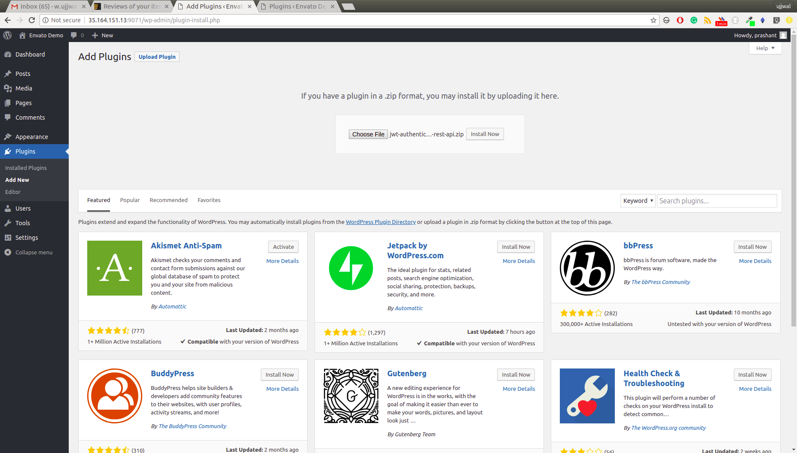 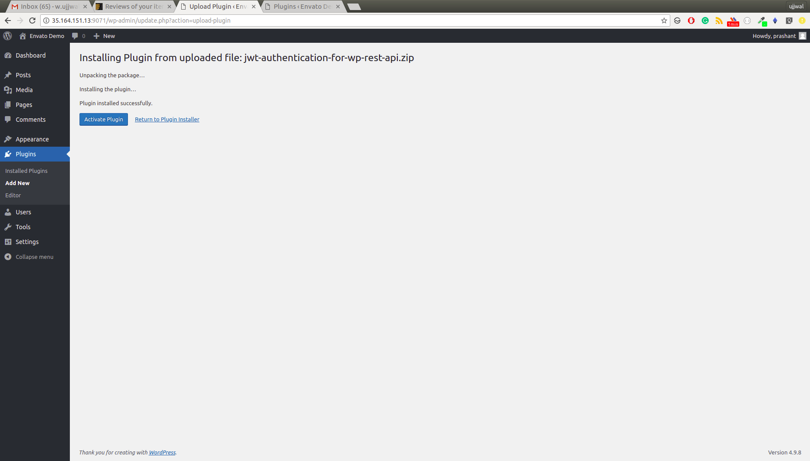
Along with above steps, you also need to ensure that you web serve(Apache/Nginx) supports
HTTP Authorization Header. If you are using shared hosting and it has disabled the HTTP Authorization Header, then you need to enable it. To enable Authorization Header, please follow the following steps- Login to your shared hosting
- Visit file manager and go to the root directory of your website.
- You’ll find a .htaccess file, in this file after
RewriteEngine online add following two lines:RewriteCond %{HTTP:Authorization} ^(.*) RewriteRule ^(.*) - [E=HTTP_AUTHORIZATION:%1] - After this change, ensure that a section of your file looks as below:
RewriteEngine on RewriteCond %{HTTP:Authorization} ^(.*) RewriteRule ^(.*) - [E=HTTP_AUTHORIZATION:%1]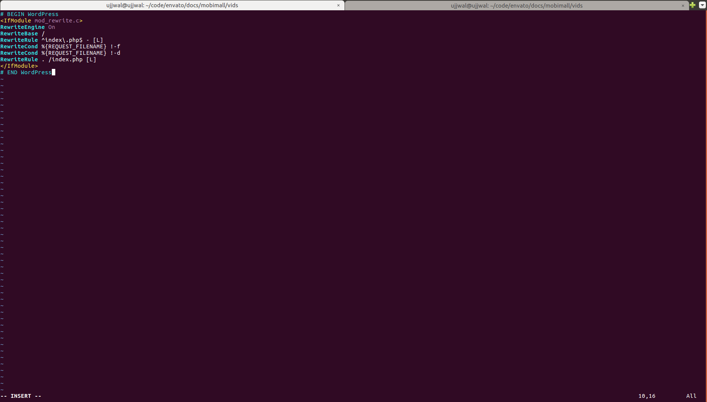 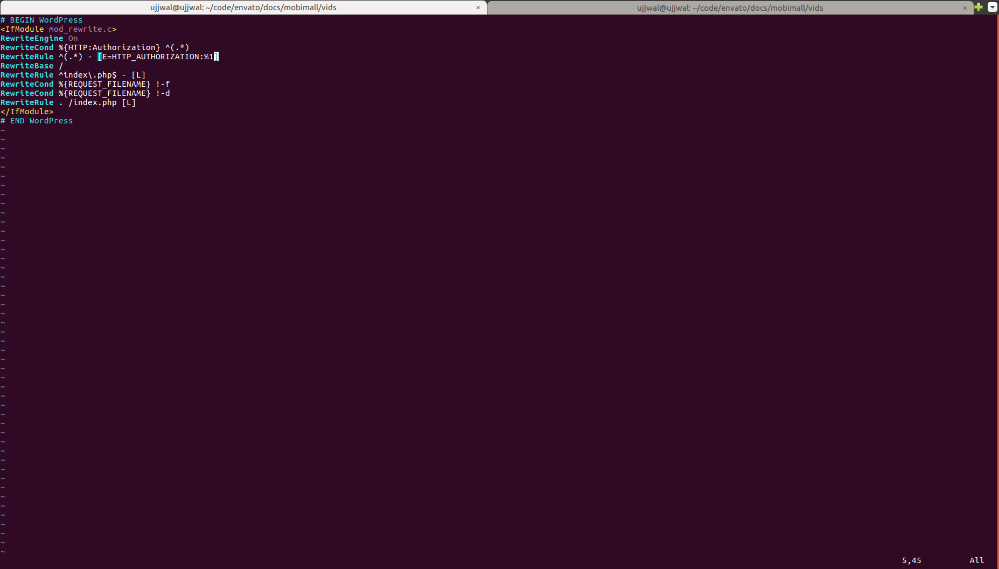
-
WooCommerce PayU India (Optional)
You only need to install this plugin if you need to integrate PayUMoney payment gateway. Follow the following link to install and setup this plugin:
https://wordpress.org/plugins/woocommerce-payu-paisa/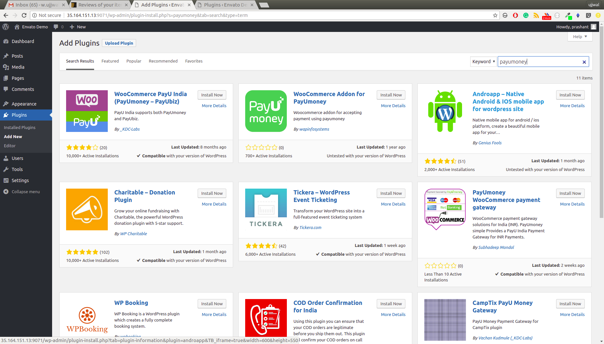 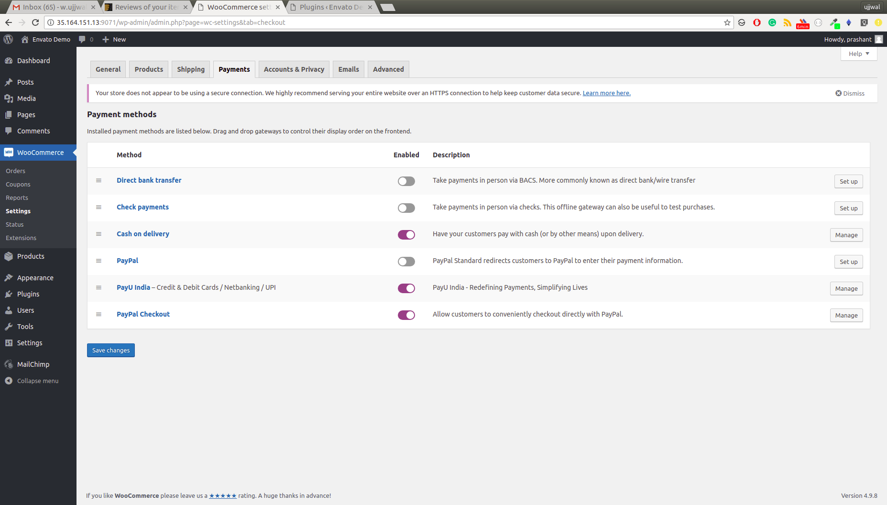
-
-
Install Node.js
You must have Node.js installed on your system to begin building our app. Please follow the following step if nodejs is not installed on your system. If already done, you can skip this step
Install Node.js version 8 or above on your system.Download the Node.js as per your operating system from https://nodejs.org/en/download/ To ensure that you have correct version of nodejs installed, from the command line issue the following command
node -vIf you see the string containing version number greater than 8, you are good to go. If you get ` command not found error`, that means nodejs is not properly installed on your system. You’ll need to troubleshoot the problem.
*You may be able to use node version lessser than 8 but we haven’t tested the app with these versions
-
Install ionic and cordova
In order to build our app you need to have installed ionic and cordova on your system. To install these packages issue the following command from command line:
npm install -g ionic@3.9.2 cordovaThis will install the ionic and cordova programs on your system. To ensure that you have successfully installed both the programs, issue following command from the command line
ionic -v && cordova -v If version number gets printed on the console, you are good to go. If you get `command not found error`, that means that these programs didn't get properly installed on your system. You'll need to troubleshoot the problem. -
Connect the app with your woocommerce store
In order to connect the app with your woocommerce store, you need to make changes in the
src/app/app.config.ts. Update the values of the following variables- apiBase - Example Value:
http://www.example.com/wp-json/. This is the base url of woocommerce’s REST APIs. Few of the examples of apiBase values are as follows:- http://www.example.com/wp-json/
- http://subdomain.example.com/wp-json/
- http://www.example.com:8000/wp-json/
- http://www.example.com/subdirectory/wp-json/
Note: Replace www.example.com with your domain or IP address
-
adminUsername - This is the admin’s username of your wordpress website, that you use while loging in admin section
-
adminPassword - This is the admin’s password of your wordpress website, that you use while loging in admin section
-
paypalProduction - Use your Paypal’s PRODUCTION_CLIENT_ID. For more info, please visit https://ionicframework.com/docs/native/paypal/
-
paypalSandbox - Use your Paypal’s SANDBOX_CLIENT_ID (you will need this only for testing purpose, otherwise you can leave it blank)
-
payuSalt: Your PayUMoney salt
- payuKey: Your PayUMoney key
- apiBase - Example Value:
Note: If you are unable to understand any topic or find any topic needs more elaboration. Please raise an issue ticket at this link https://opuslabs.freshdesk.com